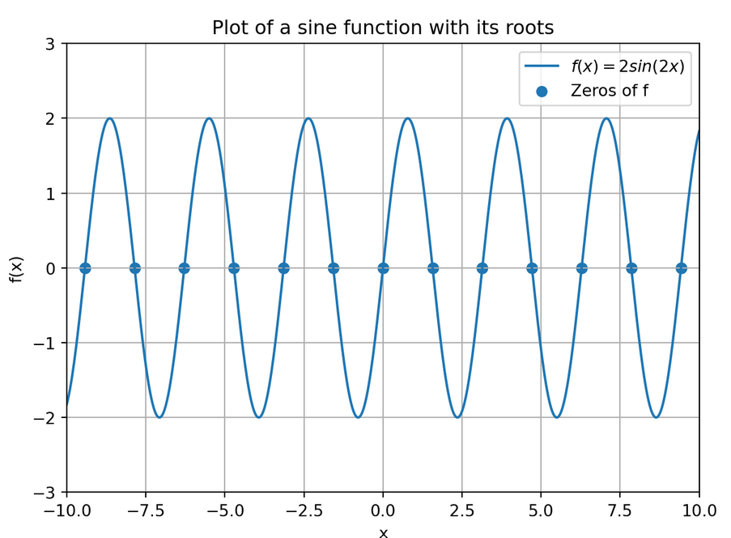
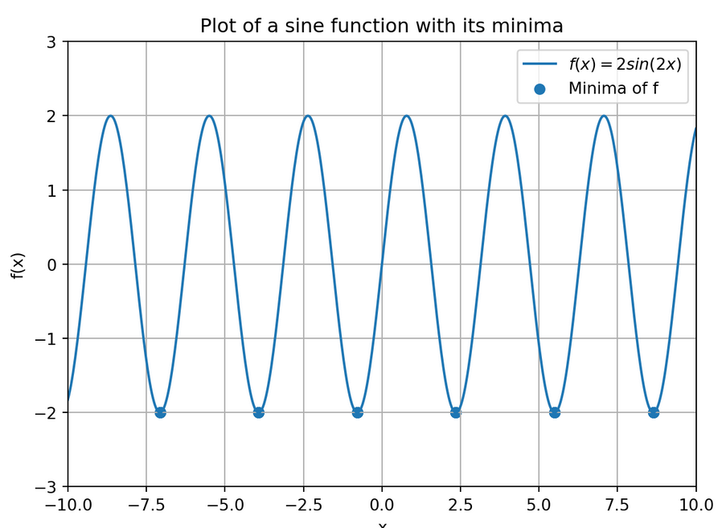
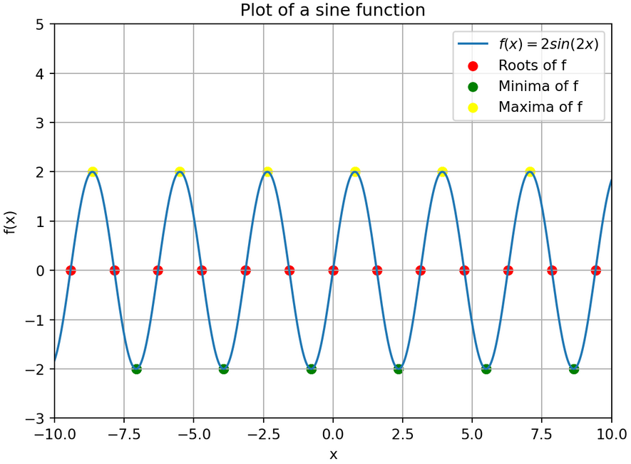

Tutorial Exercises Week 5
Question 1
Write a function roots(a,b,c) that takes as input three numbers a,b and c and outputs a list with as two elements the roots
x_\ell = \frac{- b - \sqrt{b^2 - 4ac}}{2a} \ \ \text{ and } \ \ x_r = \frac{- b + \sqrt{b^2 - 4ac}}{2a}
of the quadratic function f(x) = ax^2 + bx + c. As an example, the command roots(1,2,-1) should return [-2.414213562373095, 0.41421356237309515].
Question 2
Write a function called maximum() that takes as input a mathematical function f : \mathbb{R} \rightarrow \mathbb{R} and an initial guess guess. It should output an x that maximizes the function f. Your function should make use of fmin() with initial guess guess.
Hint: An x maximizes the function f(x) if and only if it minimizes the function -f(x).
Define the function f(x) = -x^2 - 3x + 1 as a Python function and test your function maximum() on it with initial guess guess = 10. The maximum should be attained at x = -1.5.
Question 3
In this exercise, we will plot a sine function and try to find all the roots that it has.
- Replicate the figure below in Python, i.e., plot the function f(x) = 2sin(2x) on the interval [-10,10] with the specified figure requirements

The function f has many roots, i.e., x-values that satisfy 2\sin(2x) = 0, on the interval [-10,10]. We will try to find all of them and indicate them in the figure of part a).
Create a vector guess = [-10, -9.5, -9, \dots, -1, -0.5, 0, 0.5, 1, 1.5, 2, \dots, 10] using
np.linspace()Create a for-loop that executes for every choice of initial guess in the vector
guessthe functionfsolve()with the chosen guess. The roots that are found should be stored in a list calledroots.
Hint: Define an empty list roots = [] and append the found roots to it. The output should be
[-9.424777960769301, -9.42477796076938, -9.42477796076938, -9.42477796076938, -7.853981633974483, -7.853981633974483, -3.141592653589793, -6.283185307179586, -6.283185307179586, -513.6503988619313, -4.71238898038469, -4.71238898038469, -14.137166941154069, -3.141592653589793, -3.141592653589793, -3.141592653589793, -1.5707963267948966, -1.5707963267948966, -1.5707963267948966, 0.0, 0.0, 0.0, 1.5707963267948966, 1.5707963267948966, 1.5707963267948966, 3.141592653589793, 3.141592653589793, 3.141592653589793, 14.137166941154069, 4.71238898038469, 4.71238898038469, 782.2565707438586, 6.283185307179586, 6.283185307179586, 3.141592653589793, 7.853981633974483, 7.853981633974483, 9.42477796076938, 9.42477796076938, 9.42477796076938, 9.424777960769301]
It is important to observe that different roots of f might be found depending on the intitial guess chosen for fsolve(). You can also see that sometimes for different guesses the same root is found; you could reduce this list to only include the unique elements (using np.unique()) but you don’t have to worry about this for now.
Next we will plot the roots in the figure of part a) as points.
- Create a vector zeros = [0,0,\dots,0] whose number of zeros is the same as the number of elements in the vector
roots(i.e., the length ofroots)
Hint: You can do this with a for-loop or you might have a look at thezeros() function from Numpy yourself.
- Plot the vectors
rootsandzerosagainst each other using a scatter plot (so that the combinations appear as points) in the figure generated in part a). Make the necessary adjustments so that the output looks like the figure below.

Question 4
Create a similar figure as in Question 3, but now with the minima indicated in the figure instead of the roots of f. Your figure should look like this.

Bonus question
Combining all the previous questions, create one figure that contains all the roots (as red points), minima (as green points) and maxima (as yellow points) of the function f. Your figure should look like this:

Hint: To create the different colors, you can use the argument c='[color]' of plt.scatter() with [color] replaced by the desired color.